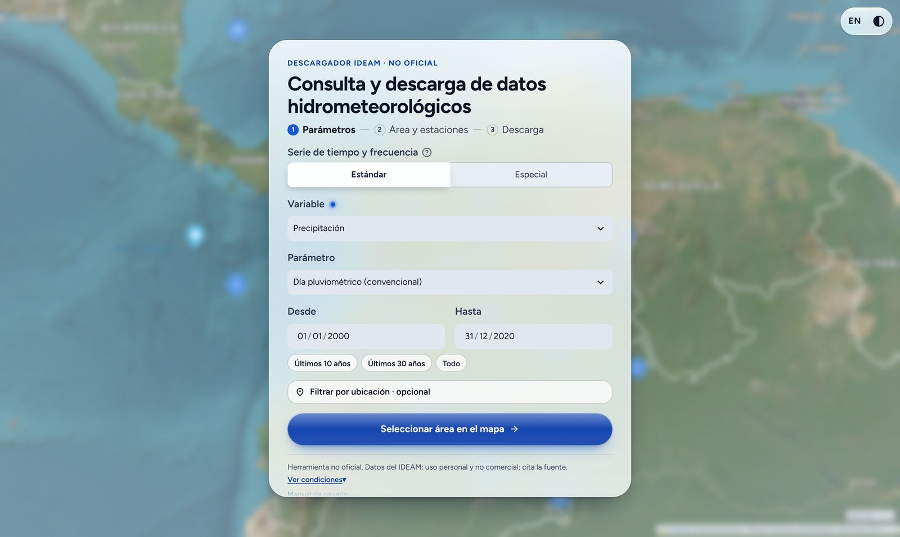
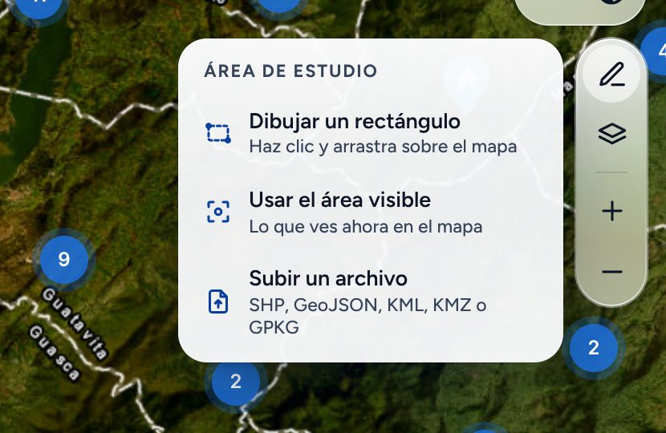
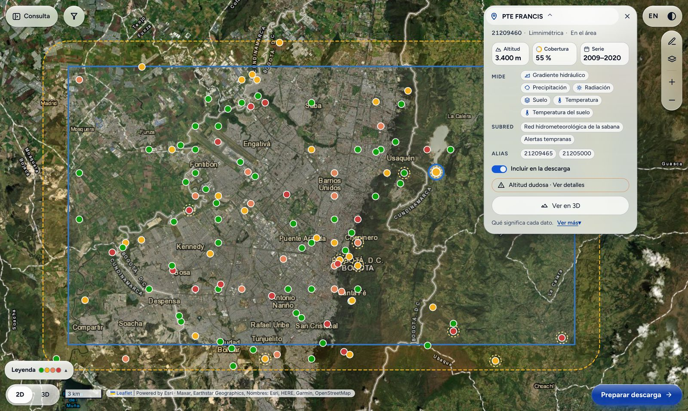
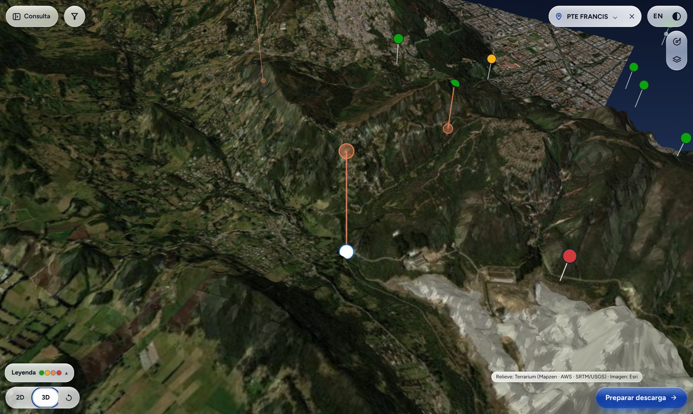
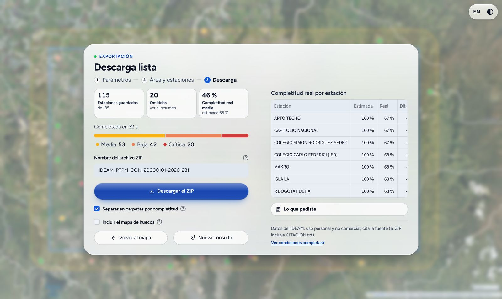
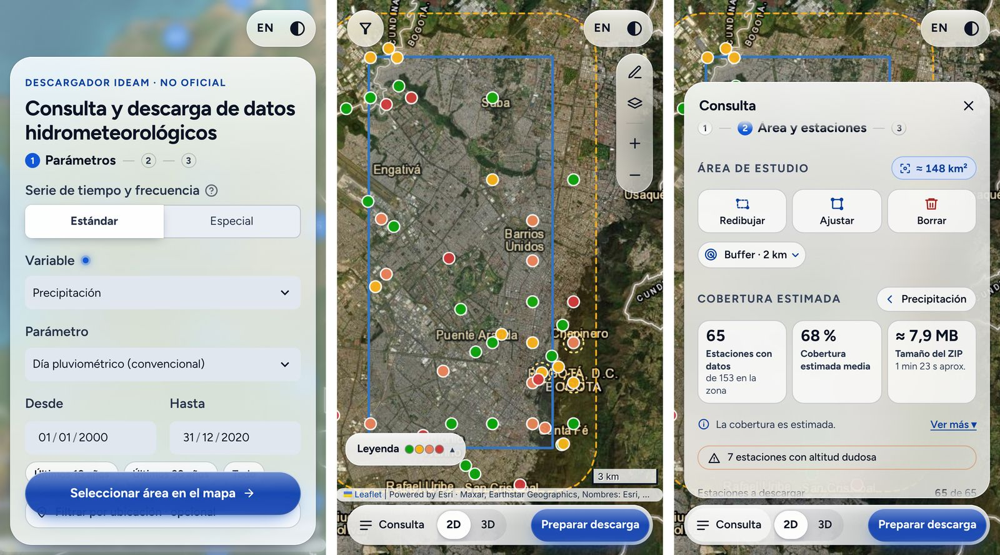

Contenido del manual
Lo que el Descargador agrega al portal DHIME
El portal DHIME del IDEAM es la fuente oficial de las series de su red de estaciones, y es la misma fuente que usa esta herramienta. El portal está pensado para consultas puntuales; un estudio de cuenca necesita decenas de estaciones y décadas de datos. Esta es la diferencia, punto por punto:
| Qué necesitas | En el portal DHIME | En el Descargador IDEAM |
|---|---|---|
| Encontrar las estaciones de tu cuenca | Dibujas un rectángulo o buscas por departamento, municipio o nombre. | Dibujas el área o subes el contorno real de la cuenca (Shapefile, GeoJSON, KML/KMZ o GeoPackage), con una franja opcional de 0,5 a 15 km para sumar las vecinas. También puedes elegir por ubicación, como en el portal. |
| Muchas estaciones | Un máximo de estaciones por consulta (con algunos parámetros, solo 10). | Todas a la vez: la herramienta hace las consultas por su cuenta, hasta 1.500 estaciones por área. |
| Muchos años | Un máximo de años por consulta: 10 en series horarias, 30 en diarias y 50 en mensuales. | Pides el periodo completo: la herramienta lo parte en los tramos que permite el portal, los pide todos y los une. |
| Archivos listos para trabajar | Un archivo por tramo, que luego hay que unir en orden y renombrar a mano. | Un Excel por estación, con el formato original del IDEAM y nombrado con la estación, su código y el parámetro. |
| Datos de cada estación | La altitud, las fechas y demás metadatos vienen en el encabezado del Excel: hay que descargarlo para verlos. | Una ficha en el mapa, sin descargar nada: código, tipo, altitud, cobertura, años de la serie, qué mide de verdad, su subred y sus otros códigos. |
| Saber qué vas a recibir | La cifra de cantidad probable de cada estación, en una tabla. | La cobertura estimada de cada estación pintada en el mapa con cuatro colores, la cobertura media, un filtro por rango y el peso del ZIP con el tiempo aproximado. |
| Saber qué llegó de verdad | No se informa: hay que contar los datos. | La completitud real de cada estación, comparada con la estimada, y un mapa de huecos año por año. |
| Nivel de aprobación del dato | Viene dato a dato dentro de cada Excel. | Resumido por estación: qué porcentaje es definitivo, en revisión o preliminar. |
| Ordenar la entrega | — | Le pones nombre al ZIP y, si quieres, las estaciones van en carpetas según su completitud real. |
| Revisar altitudes | — | Una vista 3D con el relieve real que marca las estaciones cuya altitud de catálogo se aleja más de 200 m del terreno y muestra el error con un haz naranja. |
| Ver el relieve de la cuenca | — | El relieve en 3D con foto satelital, con mapa topográfico o coloreado por altitud. |
| Elegir a mano | Marcas las estaciones una por una. | Una lista con casillas y buscador para quitar o volver a incluir estaciones. |
| Citar la fuente | La armas tú siguiendo los términos de uso. | El ZIP trae la cita lista, con la fecha real de tu descarga. |
| Si algo se interrumpe | Repites la consulta. | Puedes detener la descarga y llevarte lo ya guardado. Si recargas la página o se cae la conexión un momento, la descarga sigue. |
| Series especiales | Decadal y multianual. | Las mismas, con los mismos nombres y cálculos, y te avisa antes si el periodo pedido es demasiado largo. |
| Comodidad | — | Funciona en el celular, en español o inglés, en tema claro u oscuro, con alto contraste y con un modo liviano para equipos lentos. |
En el portal son 60 consultas (tres tramos de 10 años por estación) y 60 archivos por unir y renombrar. Con el Descargador es una sola descarga que entrega 20 Excel listos, con un resumen de lo que llegó y la cita de la fuente.
Qué necesitas
- Un navegador actualizado y conexión a internet. No hay que instalar nada. Funciona en computador, tableta y celular.
- La clave de acceso que te entregaron. Se pide una sola vez por navegador; después entras directo. Para salir, usa Cerrar sesión en el menú de ajustes.
- Tu área de estudio, si ya la tienes delimitada: el contorno de la cuenca en un archivo SIG. Si no, puedes trazarla sobre el mapa o elegir las estaciones por departamento y municipio.
El trabajo se hace en tres pasos, que la app muestra siempre arriba:
Parámetros
Qué variable, qué parámetro y qué periodo quieres.
Área y estaciones
Dónde: marcas el área y revisas las estaciones que caen en ella.
Descarga
La app consulta al IDEAM y te entrega un ZIP ordenado.
La primera carga puede tardar hasta un minuto mientras el servidor se despierta. Las siguientes son inmediatas.
La consulta: qué datos y de qué periodo
La app abre con la tarjeta de consulta. Las listas son las mismas del portal del IDEAM, con los mismos nombres.

- Serie de tiempo y frecuencia. Estándar trae las series diarias, mensuales, anuales, horarias y de alta frecuencia. Especial trae los cálculos del IDEAM, decadales y multianuales (ver la serie especial).
- Variable y Parámetro. Por ejemplo, en Precipitación el IDEAM ofrece Día pluviométrico (convencional), Precipitación total mensual y Precipitación total anual. Puedes abrir cada lista o escribir para buscar. El punto junto a «Variable» se enciende en azul cuando la lista del IDEAM terminó de cargar.
- Desde y Hasta, en formato día/mes/año. Los atajos Últimos 10 años, Últimos 30 años y Todo llenan el periodo de una vez.
- Pulsa Seleccionar área en el mapa.
No te preocupes por los límites del portal: la app divide tu periodo en los tramos que admite el IDEAM y después los une en un solo Excel.
| Frecuencia de la serie | Años por consulta en el portal |
|---|---|
| Mensual y anual | 50 años |
| Diaria | 30 años |
| Horaria | 10 años |
| Cada 2, 5 o 10 minutos | 1 mes |
Elegir las estaciones por ubicación, sin dibujar
Si prefieres elegir como en el portal, abre Filtrar por ubicación · opcional al final de la tarjeta y elige el Departamento, el Municipio y, si quieres, estaciones por nombre o código. Cada estación muestra los años de su serie, por ejemplo ASTILLEROS [27011110] · 1991–2026. El botón cambia a Ver N estaciones en el mapa y el mapa se abre con solo esas estaciones. Para volver a trabajar por área, usa Quitar filtro en el panel o dibuja un área.
La serie especial
Son cálculos que el IDEAM hace sobre una serie base. El parámetro trae su cálculo y su código, tal como en el portal: Día pluviométrico |SUM [PTPM_CON].
- Decadal: un dato por década del mes (días 1 a 10, 11 a 20 y 21 a fin de mes; 36 por año).
SUMsuma,MAXtoma el máximo,MINel mínimo yAVGel promedio. Los tramos se cortan a fin de mes, así ninguna década queda partida. - Multianual: 36 filas por estación: el mínimo, la media y el máximo de cada mes en todo tu periodo. Se calcula de una sola vez, así que el periodo no puede pasar el límite de la serie base; si lo pasa, la tarjeta te pide acortarlo.
El IDEAM las entrega de a un mes por consulta: diez años son 120 consultas por estación y cada Excel puede tener cientos de miles de filas. Úsalas con periodos cortos y pocas estaciones. Si el periodo superaría el millón de filas por estación (el máximo de Excel), la tarjeta te pide acortarlo.
El área de estudio
El mapa ocupa toda la pantalla. Todo lo que necesitas para marcar el área está en el lápiz de la barra de herramientas, arriba a la derecha.

Dibujar un rectángulo
Acércate a tu zona, elige la opción y arrastra de una esquina a la opuesta.
Usar el área visible
El área es lo que ves en pantalla. Se activa con el mapa cerca (zoom 10 o más).
Subir un archivo
El contorno real de tu cuenca, con cualquier forma. Es la opción más precisa.
Apenas marcas el área, un escáner la recorre mientras la app busca las estaciones, y estas aparecen de norte a sur. En el panel ves el tamaño del área en km² y tres acciones: Redibujar, Ajustar (mueves las esquinas y pulsas Guardar) y Borrar. Solo hay un área a la vez.
Formatos de archivo
| Formato | Qué subir |
|---|---|
| Shapefile en ZIP | Un .zip con el .shp, .shx, .dbf y .prj. Es lo más cómodo. |
| Shapefile suelto | Los archivos .shp, .shx y .dbf seleccionados a la vez (y el .prj si lo tienes). |
| GeoJSON | Un archivo .geojson o .json. |
| KML / KMZ | El archivo exportado de Google Earth. |
| GeoPackage | Un .gpkg. Si trae varias capas, se usa la de polígonos. |
Pulsa Subir un archivo, arrastra el archivo al recuadro y, cuando diga Archivo válido, pulsa Usar esta área. El archivo debe traer polígonos y su sistema de coordenadas: si falta el .prj y las coordenadas están en metros, la app avisa en lugar de ubicar el área en un lugar equivocado.
El buffer: sumar las estaciones vecinas
Las estaciones cercanas al límite de la cuenca suelen servir para interpolar o rellenar datos. La píldora Buffer · 2 km del panel agrega una franja alrededor del área (en naranja punteado) de 0,5 a 15 km. Cada estación queda marcada como en el área o en el buffer, y esa marca llega hasta el resumen del ZIP. Para no usarlo, apaga Incluir estaciones cercanas.
Revisar las estaciones antes de descargar
Con el área marcada, el panel Consulta te dice qué vas a recibir antes de pedir un solo archivo. En el computador llega cerrado para que veas el mapa entero; ábrelo con el botón Consulta de arriba a la izquierda.
Las tres cifras
Estaciones con datos
Cuántas estaciones del área tienen la serie elegida en tu periodo, y cuántas hay en total en la zona.
Cobertura estimada media
Qué parte del periodo cubren, en promedio, los registros de las estaciones marcadas.
Tamaño del ZIP
El peso aproximado de la descarga y cuánto tardaría.
Qué significa cada color
- Halo punteado alrededor del punto: la altitud del catálogo no coincide con el terreno (ver altitudes).
- Punto hueco con borde punteado: una estación que quitaste de la descarga.
- Anillo azul: la estación seleccionada.
- Las estaciones sin serie de esa variable vienen ocultas para no tapar las demás; se muestran con Mostrar las sin serie.
La Leyenda, abajo a la izquierda, recuerda los colores. El botón de capas cambia el mapa base: satélite con nombres, satélite, relieve, calles o satélite de noche.
La lista de estaciones
- Están todas las estaciones descargables, de la mejor cobertura a la peor, con su código, los años de su serie y su porcentaje. Con más de ocho, aparece un buscador por nombre o código.
- Las marcadas se descargan. Todas vienen marcadas: desmarca las que no quieras. La casilla de arriba marca o desmarca todas.
- Haz clic en una estación para que el mapa vaya hasta ella.
- El filtro (embudo, arriba a la izquierda del mapa) deja solo las estaciones dentro de un rango de cobertura, por ejemplo de 50 a 100 %.
- El nombre de la variable (por ejemplo ‹ Precipitación) te devuelve al paso 1 para cambiar la variable o el periodo sin perder el área.
La ficha de la estación
Al hacer clic en una estación aparece una píldora con su nombre; púlsala para desplegar la ficha. Todo lo que ves aquí sale del catálogo del IDEAM, sin descargar ningún archivo.

- Arriba: el código, el tipo de estación, si está en el área o en el buffer y, si ya no opera, el año en que se suspendió.
- Tres cifras: altitud, cobertura y años de la serie.
- Cuando el IDEAM lo informa: Mide (las variables que registra la estación), Subred (la red regional a la que pertenece) y Alias (otros códigos con los que el IDEAM registra la misma estación, útiles para no partir su historial).
- Si la altitud es dudosa, ⚠ Altitud dudosa · Ver detalles explica el caso.
- Incluir en la descarga la quita o la vuelve a poner, y Ver en 3D la muestra sobre el relieve.
Vista 3D y revisión de altitudes
El selector 2D 3D, abajo a la izquierda, muestra tu área sobre el relieve real, exagerado dos veces para que los desniveles se noten. Cada estación se apoya en el terreno.

Altitud dudosa
La app compara la altitud del catálogo del IDEAM con la altura del terreno en el punto de la estación, según un modelo de elevación. Si se alejan más de 200 m, la estación queda marcada:
- En el mapa 2D, con un halo punteado.
- En el panel, con la línea ⚠ N estaciones con altitud dudosa, que abre la lista con la altitud del catálogo, la del terreno y la diferencia.
- En el 3D, con un haz naranja desde la estación hasta la altitud del catálogo, aunque quede «bajo tierra».
Si la altitud del catálogo no existe en toda la zona, el error está en la altitud. Si existe cerca pero no en el punto exacto, quizá la altitud está bien y lo errado son las coordenadas. La app indica cuál de los dos casos es. Los datos se descargan igual: el aviso es para tu análisis.
Moverse en 3D
- Computador: arrastra para moverte, clic derecho y arrastrar para girar e inclinar, rueda para acercar.
- Celular: un dedo para moverte; con dos dedos giras, inclinas y acercas.
- El menú Cámara de la barra de herramientas tiene todos los controles sin gestos, con una brújula que vuelve al norte.
- El botón de capas cambia la textura del relieve: satélite, topográfico o coloreado por altitud.
La primera vez que abres el 3D con un área, una animación satelital te lleva desde el espacio hasta tu cuenca mientras carga el relieve. Puedes saltarla con Esc y repetirla con ↻.
La descarga
Pulsa Preparar descarga, abajo a la derecha. Si está en gris, el botón dice qué falta (por ejemplo, Delimita el área).
Mientras descarga verás el porcentaje, una barra con el tiempo que falta, cuántas estaciones van guardadas u omitidas y cuáles se están consultando en ese momento. A la derecha queda el recibo de lo que pediste.

- Revisa el resumen: estaciones guardadas, omitidas y la completitud real media, con el reparto por clase.
- Si quieres, cambia el nombre del archivo ZIP. Viene uno sugerido, como
IDEAM_PTPM_CON_20000101-20201231. - Elige las opciones: Separar en carpetas por completitud (marcada por defecto) e Incluir el mapa de huecos. Puedes cambiarlas sin volver a descargar.
- Pulsa Descargar el ZIP.
Con Volver al mapa ajustas la consulta y descargas otra vez; con Nueva consulta empiezas de cero.
Detener, recargar y esperar turno
- Detener la descarga la corta a mitad de camino. Lo que alcanzó a bajar no se pierde: Descargar lo guardado te entrega esas estaciones en un ZIP.
- Puedes recargar la página sin perder el avance: la descarga sigue en el servidor. Si cierras la pestaña, se detiene sola a los dos minutos.
- Para no saturar al IDEAM, el servidor hace como máximo 4 descargas a la vez. Si están ocupadas, verás tu puesto en la fila y el tiempo estimado; tu descarga empieza sola.
Qué trae el ZIP
Ejemplo con precipitación diaria y carpetas por completitud:
IDEAM_PTPM_CON_20000101-20201231.zip ├── 1_Completitud_Alta_70_100/ │ ├── JARDIN_BOTANICO_[21205710]_PTPM_CON.xlsx │ └── … ├── 2_Completitud_Media_50_70/ ├── 3_Completitud_Baja_25_50/ ├── 4_Completitud_Critica_0_25/ ├── resumen_descarga.csv ← qué llegó de cada estación ├── mapa_de_huecos.png/csv ← opcional: datos por estación y año └── CITACION.txt ← la cita de la fuente, lista
Un Excel por estación
El mismo formato del portal: encabezado con los metadatos de la estación y, debajo, los datos. Si tu periodo necesitó varios tramos, ya vienen unidos y en orden. El nombre lleva la estación, su código y el parámetro, así dos estaciones homónimas nunca se pisan.
resumen_descarga.csv
Una fila por estación: cobertura estimada, datos reales, completitud real, porcentaje definitivo, en revisión y preliminar, si se guardó u omitió, dónde quedó en el ZIP y el detalle de cada tramo. Se abre con Excel.
Mapa de huecos
Una cuadrícula de estaciones por años, coloreada según el porcentaje de datos de cada año. Muestra de un vistazo dónde faltan datos, por ejemplo «le faltan 1998–2003». No aplica a la serie multianual.
CITACION.txt
La cita de la fuente con el formato que exigen los términos de uso del IDEAM y la fecha real de tu descarga.
Nivel de aprobación del dato
El IDEAM clasifica cada dato en tres niveles. El Excel lo trae dato a dato y el resumen lo suma por estación.
| Nivel | Código | Qué significa |
|---|---|---|
| Preliminar | 900 | Dato de campo o de sensor automático, sujeto a cambios. |
| En revisión | 1100 | Superó la evaluación preliminar y sigue en verificación. |
| Definitivo | 1200 | Revisado, aprobado y considerado confiable. |
Los datos recientes suelen ser preliminares. Si vas a usarlos en un estudio formal, revisa esta información antes del análisis.
Cobertura estimada y completitud real
La app usa dos medidas, una antes y otra después de descargar. Conviene no confundirlas.
Cobertura estimada · antes
Sale de la «cantidad probable» del IDEAM: qué parte de tu periodo abarca el registro de la estación, entre su primer y su último dato. No descuenta los huecos internos. Sirve para descartar estaciones que no llegan a tu periodo.
Completitud real · después
Los datos que llegaron de verdad en cada Excel frente a los que caben en tu periodo con esa frecuencia. Sí descuenta los huecos. Se mide al guardar cada archivo.
Una estación con 100 % de cobertura y 85 % de completitud tiene registro en todo tu periodo, pero le falta el 15 % de los datos. La tabla de la pantalla final ordena las estaciones de la mayor caída a la menor, para que veas primero las que más perdieron.
Las dos medidas usan las mismas cuatro clases: alta (70 a 100 %), media (50 a 70 %), baja (25 a 50 %) y crítica (0 a 25 %). Las carpetas del ZIP se arman con la completitud real.
Ajustes, idioma y celular
Arriba a la derecha, en todas las pantallas, están el idioma (EN / ES) y el menú de ajustes (◐): tema claro u oscuro, alto contraste, modo Lite, este manual y cerrar sesión. Sin elegir nada, el tema sigue la configuración de tu equipo.
El modo Lite quita los efectos visuales y usa un 3D más liviano, con los mismos datos y funciones. Es útil en equipos con poca memoria gráfica.

Preguntas frecuentes
No aparece ninguna estación en mi área
Puede que no haya estaciones del IDEAM dentro. Enciende el buffer o aumenta su ancho para incluir las cercanas.
Hay estaciones, pero no puedo preparar la descarga
- Revisa la lista del panel: puede que las hayas desmarcado todas.
- Prueba otro periodo: muchas estaciones solo tienen datos de ciertas décadas.
- Revisa la variable: una estación puede medir precipitación pero no temperatura. La ficha lo dice como Sin serie de esta variable.
Mi shapefile no carga
- Súbelo en un ZIP con .shp, .shx, .dbf y .prj.
- Sin el .prj la app no sabe dónde está en el mundo: expórtalo de nuevo desde tu SIG con el sistema de coordenadas.
- Debe ser un polígono: puntos o líneas no sirven como área.
El área tiene demasiadas estaciones
Por encima de 1.500 estaciones la app pide reducir el área o elegir las estaciones por departamento y municipio.
Una estación salió «Omitida»
El IDEAM no devolvió datos para ese periodo, aunque el catálogo indicara que la serie existe. Suele pasar con estaciones históricas o suspendidas. El motivo de cada tramo está en la columna «Detalle» de resumen_descarga.csv.
La descarga tarda más de lo estimado
El tiempo depende de qué tan rápido responda el servidor del IDEAM. Si tu descarga espera turno, es porque ya hay otras cuatro en curso.
El 3D se ve en blanco o se borra al girar
El navegador se quedó sin memoria gráfica. En el aviso que aparece, usa Activar Lite y reintentar. Si sigue pasando, cierra pestañas que no uses o trabaja en 2D.
En el celular el relieve 3D sale lleno de picos
Algunos navegadores alteran las imágenes para proteger la privacidad (Safari en modo privado o con protección contra rastreo, y Brave), y el relieve viene codificado en imágenes. Abre la app en una ventana normal, desactiva esa protección para el sitio o usa otro navegador.
Uso de los datos y citación
Los datos provienen del IDEAM y están protegidos por derechos de autor. Su descarga está autorizada para uso personal, privado y no comercial, y no pueden comercializarse ni venderse. El IDEAM no se hace responsable del uso de los datos ni de las interpretaciones derivadas de ellos.
Todo trabajo que los use debe citar la fuente. El ZIP trae CITACION.txt con la cita armada, por ejemplo:
Fuente: Ideam. (2026, septiembre 23). DHIME – Portal Atención al Ciudadano. http://dhime.ideam.gov.co/atencionciudadano/
El Descargador IDEAM es una herramienta independiente, no un producto oficial del IDEAM. Automatiza consultas que cualquier persona puede hacer en el portal DHIME y no almacena ni redistribuye los datos por su cuenta. Como hace el portal, cada serie descargada se registra de forma anónima en las estadísticas de descargas del IDEAM.
Fuentes de los mapas
- Satélite, satélite con nombres y relieve: Esri (Maxar, Earthstar Geographics, HERE, Garmin, FAO, NOAA, USGS, OpenStreetMap y la comunidad de usuarios de GIS).
- Calles: © colaboradores de OpenStreetMap.
- Satélite de noche: NASA EOSDIS GIBS.
- Relieve 3D: modelo de elevación Terrarium (Mapzen, AWS Open Data), con datos SRTM y GMTED2010, cortesía del U.S. Geological Survey, entre otras fuentes.
Glosario
- DHIME
- El sistema del IDEAM con las series históricas de sus estaciones hidrometeorológicas. De ahí salen todos los datos.
- Serie
- La secuencia de datos de un parámetro en una estación. El IDEAM la identifica con un código, como
PTPM_CON, que va en el nombre de cada Excel. - Cantidad probable
- La cifra del IDEAM de cuántos datos cabrían entre el primer y el último registro de la estación dentro de tu periodo. No descuenta los faltantes.
- Cobertura estimada
- La cantidad probable expresada como porcentaje de tu periodo. Se ve antes de descargar.
- Completitud real
- Los datos que llegaron frente a los que caben en tu periodo. Se mide al descargar y sí descuenta los huecos.
- Nivel de aprobación
- Estado de revisión de cada dato: preliminar (900), en revisión (1100) o definitivo (1200).
- Buffer
- Franja de 0,5 a 15 km alrededor del área para incluir estaciones cercanas.
- Tramo
- Cada bloque de años que el portal entrega por consulta. La app los pide todos y los une.
- Altitud dudosa
- Cuando la altitud del catálogo se aleja más de 200 m del terreno en el punto de la estación.
- Mapa de huecos
- Cuadrícula de estaciones por años con el porcentaje de datos de cada año.